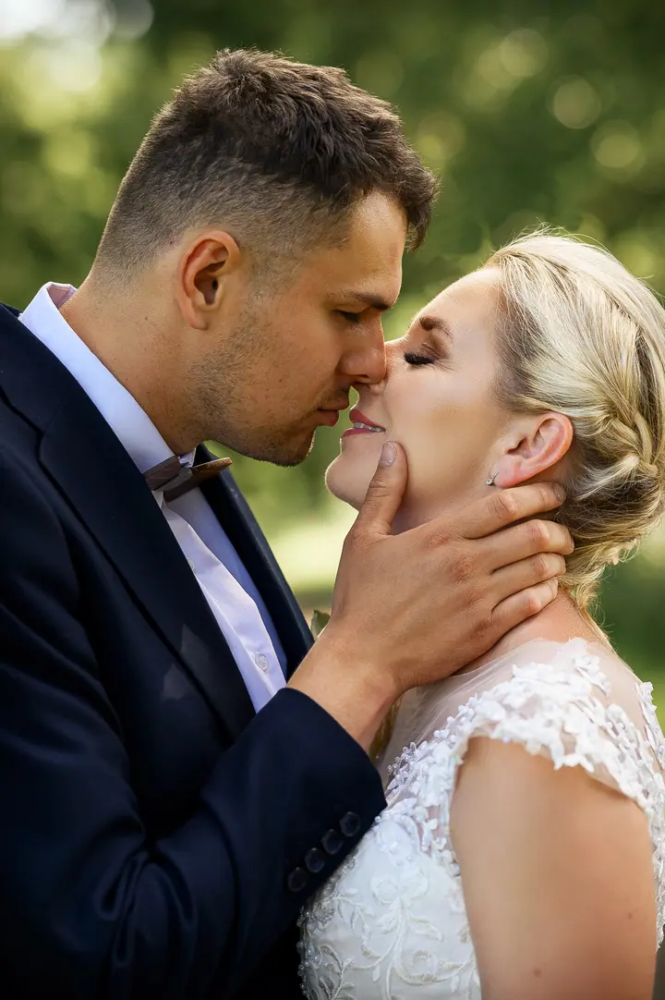
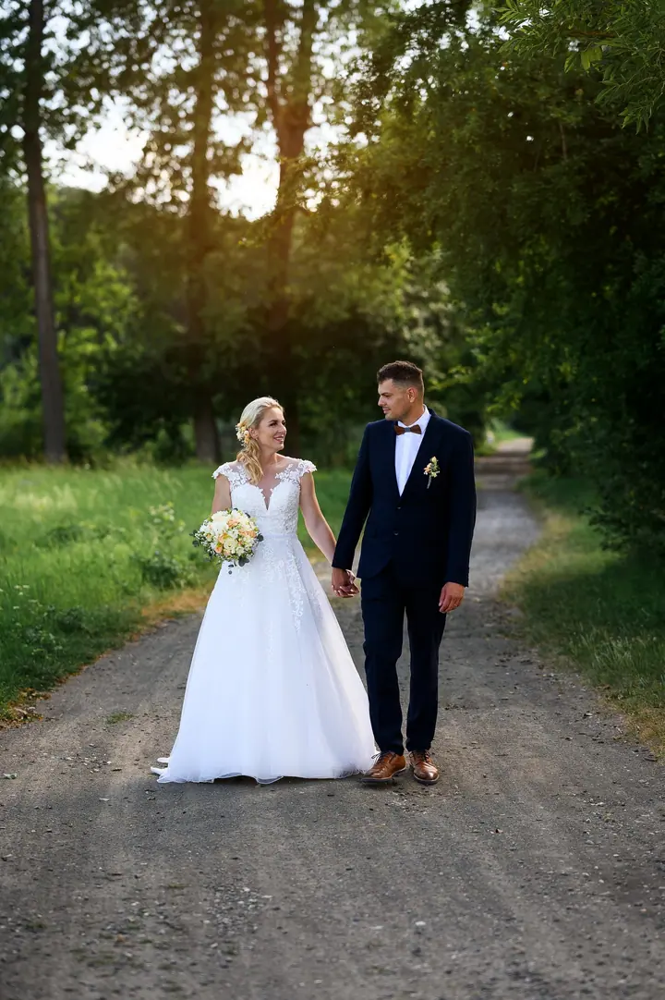
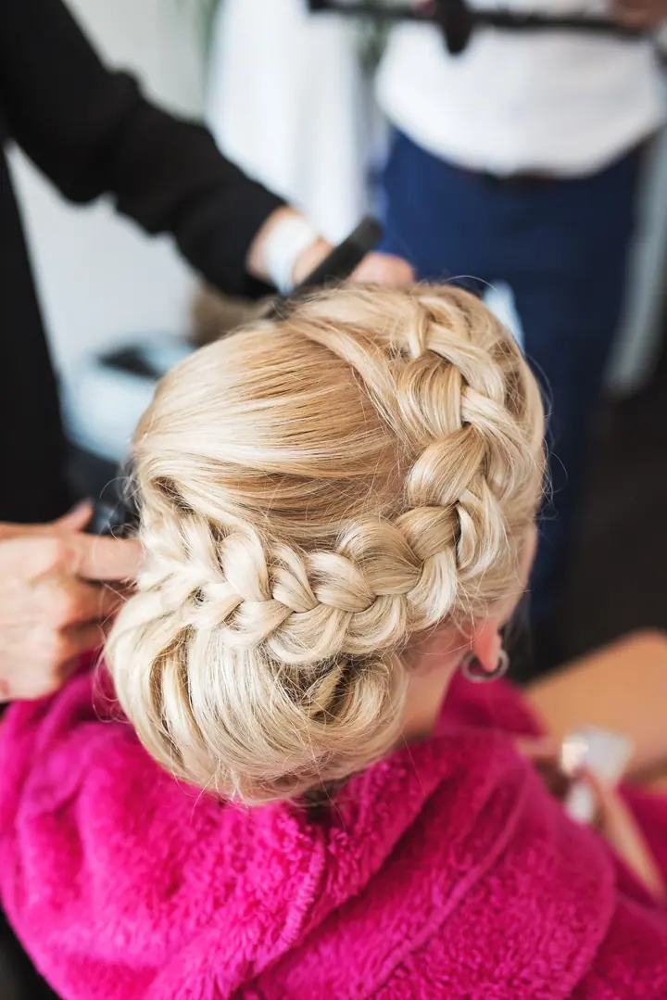
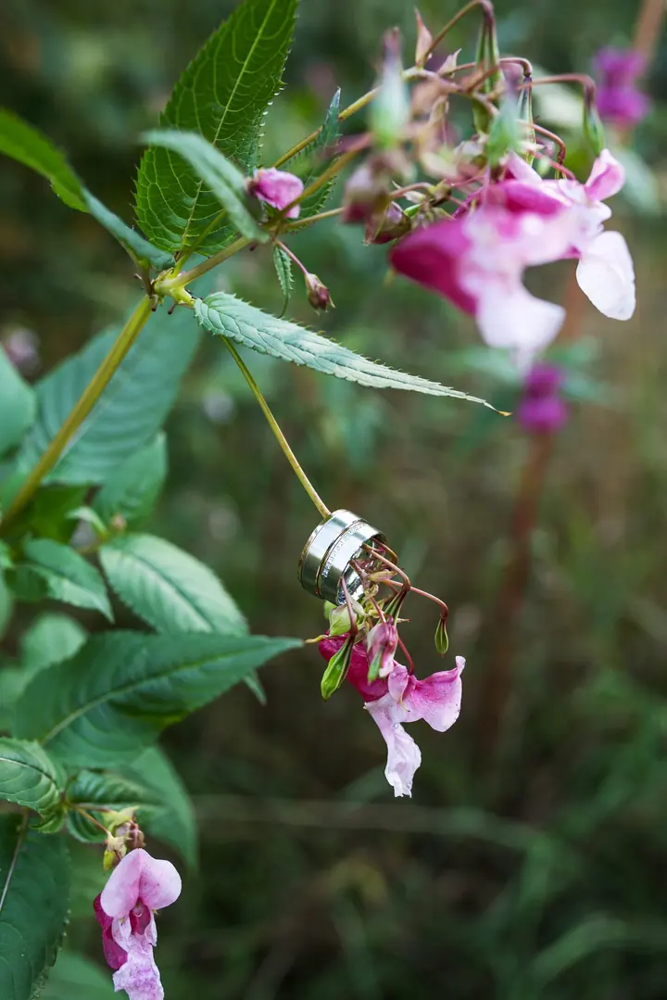

jedna
Svatby
Můžu fotit jen obřad, nebo celý den od příprav nevěsty až po první novomanželský tanec. Před svatbou se vždycky osobně potkáme na konzultaci.

Svatební a portrétní fotografka · Dvůr Králové nad Labem

Jmenuji se Věra Cejnarová a ve Dvoře Králové nad Labem fotím svatby, rodiny s dětmi a maminky v očekávání. Vystudovala jsem obor fotograf v Hradci Králové a fotografování se věnuji přes pět let.
Více o mně
Co fotím
jedna
Můžu fotit jen obřad, nebo celý den od příprav nevěsty až po první novomanželský tanec. Před svatbou se vždycky osobně potkáme na konzultaci.
Rodinné portréty, které ukážou, jak spolu fungujete, včetně humoru a lásky. Chci, abyste se při focení cítili pohodlně a přirozeně. Fotím i dětská narozeninová focení na dané téma.
Klidné focení v očekávání miminka. Můžete si vybrat i milk bath, tedy focení v mléčné koupeli, které trvá asi 30 minut.
Klasický aranžovaný newborn trvá zhruba 2 až 3 hodiny. Lifestyle focení je bez rekvizit, miminko je v náručí rodičů a hodí se pro děti do 3 měsíců.
Každý detail, každý úsměv a každý krok jsou pro mě důležité.


Za objektivem
Jmenuji se Věra a jsem rodinná, portrétní a svatební fotografka ze Dvora Králové nad Labem. Vystudovala jsem obor fotograf v Hradci Králové, fotografování se věnuji už přes pět let a pořád se v něm chci zlepšovat.
Na svatbě sleduju všechno od prvního nervózního pohledu až po první manželský tanec. Každý detail, každý úsměv a každý krok jsou pro mě důležité, protože vím, co pro vás ten den znamená. U rodinných fotek mi jde o to, abyste se cítili pohodlně a přirozeně a aby fotky ukázaly, jací doopravdy jste.
Všechny fotky, které vám předám, jsou upravené. Dostanete je v online galerii nebo na USB flash disku a ke svatebním balíčkům patří i dřevěná krabička s fleškou a fotografiemi.
Věra
Napište mi nebo zavolejte a domluvíme se, jaké focení si přejete. Termín svatby rezervuji po zaplacení zálohy.
Před svatbou se osobně potkáme a projdeme spolu průběh dne, místa i to, na čem vám záleží.
Fotím v klidu a bez spěchu, abyste se před foťákem cítili přirozeně. U svatby jsem s vámi tak dlouho, jak to odpovídá zvolenému balíčku.
Všechny fotky upravím a předám vám je v online galerii nebo na USB flash disku. Svatební fotky jsou hotové za 4 až 9 týdnů.
Portfolio
Otázky
Ne, neupravené fotografie neposkytuji. Všechny fotky, které dostanete, jsou upravené.
Svatební fotografie zpracuji během 4 až 9 týdnů od focení. U ostatních focení si můžete připlatit 800 Kč za zpracování do 5 pracovních dnů.
Ano, za focení o víkendu a ve svátek účtuji příplatek 500 Kč. Svatby v sobotu fotím jen v balíčku č. 2 a č. 3.
Fotky předávám digitálně, v online galerii nebo na USB flash disku. Tisk, obrazy a další produkty si můžete pohodlně objednat přímo z galerie.
Napište pár vět o tom, co si představujete. · +420 737 666 312